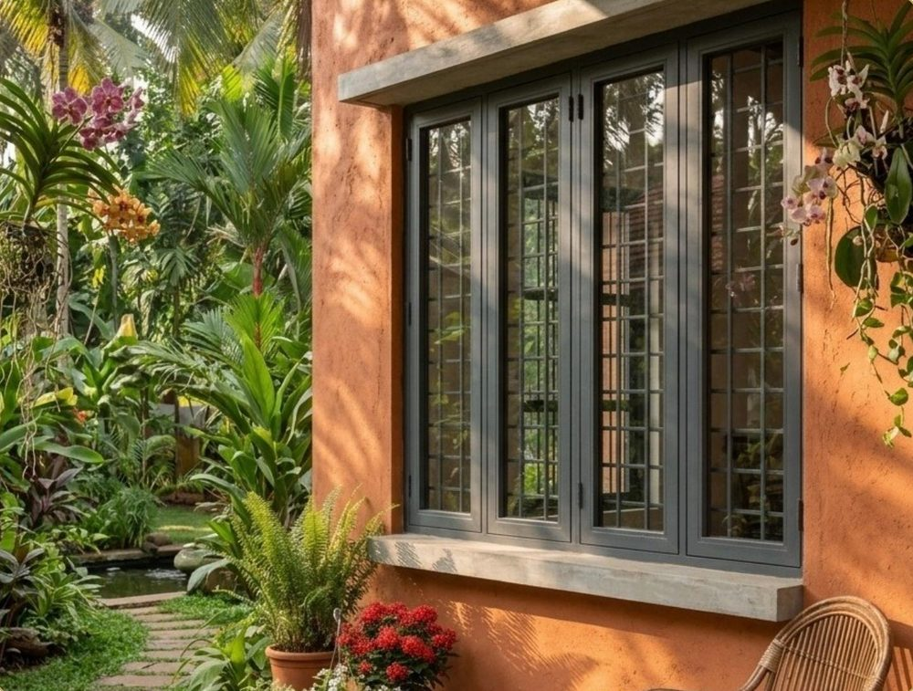
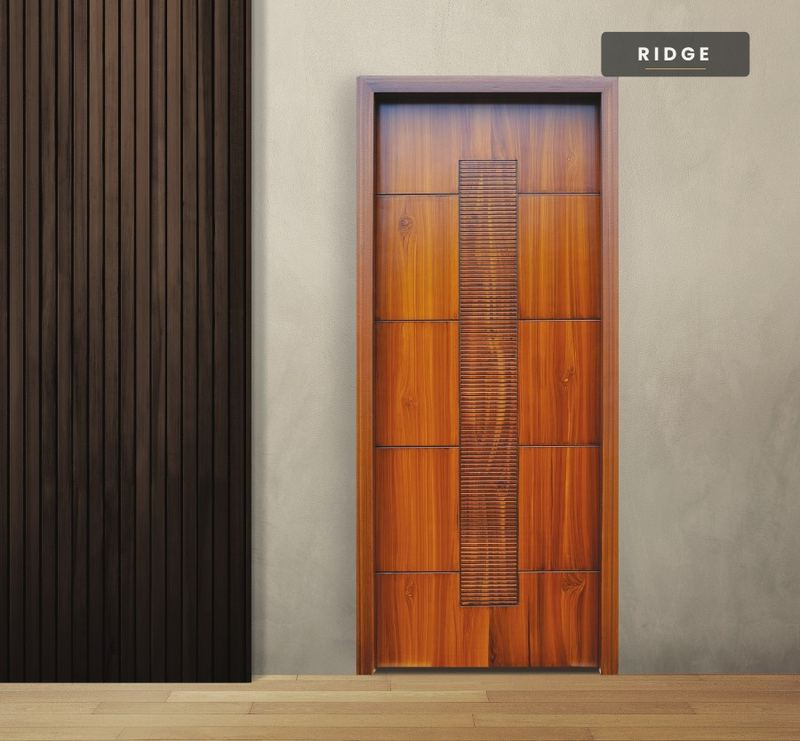

Doors and windows for homes across Kanyakumari district
Steel doors, steel and UPVC windows, FRP and pre-hung doors and WPC panels, from our showroom in Thengapattanam.

What we offer
Choose a product to see designs, sizes and how to order.
Steel doors
Heavy-duty steel main doors and safety doors for homes, villas and commercial spaces. Fusim and Hawaii, with other brands to suit your requirement.
Compare steel with wood
Steel windows
Termite-proof steel windows made to the exact size of your opening, with eight grill options. French, kitchen and fan-ventilator designs too.
See steel windows
FRP and pre-hung doors
Fibre doors of glass fibre and resin, and pre-hung doors with a WPC composite panel, PU foam and FRP skin. Twenty pre-hung designs in sixteen colours.
See FRP and pre-hung doorsUPVC windows and doors
Low-maintenance UPVC windows and doors for homes and villas. Ask us for sizes and options.
Ask about UPVCWPC panels and louvers
Wood plastic composite wall panels and louvers for interior and exterior cladding.
Ask about WPC panelsWe are authorised dealers for Fusim and Hawaii, and we supply other brands to suit your requirement.
Why choose RIDGE
A showroom you can visit
See doors and finishes in person before you decide. Our team guides you with no pressure.
Made to your measure
Our windows are built to size in our own production, and any size can be made to order.
Honest guidance
We help you choose the right product, material and finish for your space, and quote for your exact requirement.
Across Kanyakumari district
From Nagercoil to Kaliyakkavilai, Marthandam to Colachel, we supply customers across the district from Thengapattanam.
Where we serve
Visit our showroom in Thengapattanam, or call us about delivery across Kanyakumari district.
- Thengapattanam
- Nagercoil
- Marthandam
- Colachel
- Thuckalay
- Kaliyakkavilai
- Kulasekaram
- Padmanabhapuram
- Boothapandi
- Kuzhithurai
- Eraniel
- Karungal
- Manalikarai
- Aralvaimozhi
- Pacode
- Kanyakumari
We also welcome enquiries from Tirunelveli.
Questions we hear often
Real answers to what customers ask most, about steel doors, coastal conditions, installation and more.
Are steel doors suitable for homes in coastal areas like Kanyakumari?
Yes, steel doors can be used in coastal and high-humidity areas like Kanyakumari, Kaliyakkavilai, Marthandam and Colachel — but the construction and protective finish matter. Coastal air contains salt and moisture, which can accelerate corrosion, so the door should have appropriate surface protection for its location. Ridge can recommend the right configuration based on your actual site conditions.
Will steel doors rust?
A properly finished and maintained steel door from a quality manufacturer significantly reduces corrosion risk. At Ridge, we recommend and supply doors with appropriate surface protection for coastal conditions — and we guide customers on the right specification for their specific location and exposure. Key factors include the steel substrate, surface preparation, coating, edges, welds, hardware and installation.
Are steel doors suitable for bedrooms?
Yes. Steel doors are commonly used for bedrooms as well as main entrances and other areas of a home. The important considerations are the door's core, construction, sealing, hardware and overall installation. A properly selected steel door provides durability and security without making a bedroom unsuitable for normal residential use.
Do steel doors make an AC room hotter or consume more AC?
The steel material itself does not mean that an air-conditioned room will automatically lose cooling. A door's thermal performance depends on the door construction, core filling, air leakage around the frame and how well the opening is sealed. Ridge doors with an internal honeycomb-type filling are not simply a single sheet of exposed steel. Proper installation and sealing around the frame are also important for AC rooms.
Are steel doors stronger than wooden doors?
Steel generally provides a strong and durable door construction, but the complete door system matters — including the steel, frame, internal construction, hinges, locks and installation. Wood also has different grades and constructions, so comparing only the surface material can be misleading. The better comparison is between the complete specifications of the two doors.
What is the advantage of a steel door over a wooden door?
Homeowners generally choose steel doors for a combination of durability, dimensional stability, security and lower susceptibility to problems such as termite damage and moisture-related swelling or warping — all especially relevant in Kerala border and coastal Tamil Nadu conditions. The right choice still depends on where the door will be used, the design required and your budget.
Can steel doors be customised to my required size?
Many steel door systems can accommodate different sizes, but the available size range depends on the particular door design and manufacturer. Before ordering, Ridge checks the opening size and required door configuration so that the correct door size and installation details can be planned.
Can I choose different colours and designs?
Yes. The available colours, surface finishes and design options depend on the particular door range. Ridge offers different styles so that customers can select a door based on the architecture of the house, entrance design and budget, rather than being restricted to one standard appearance.
Do you provide installation?
Yes. Ridge can coordinate installation for doors supplied through us. Proper installation is important because even a good-quality door can perform poorly if the frame is not correctly positioned, aligned, anchored and sealed.
Do steel doors require maintenance?
Yes, like any exterior building product, steel doors benefit from periodic inspection and basic maintenance. Keep the surface clean, especially where the door is exposed to coastal salt or rain, and attend to scratches, coating damage or loose hardware before they become larger problems. Coastal environments like Kanyakumari deserve particular attention because salt exposure can accelerate corrosion.
Can I replace an existing wooden door with a steel door?
In many cases, yes. However, the existing opening should be inspected before finalising the door. The frame condition, opening dimensions, wall construction, threshold and installation method all need to be considered. For renovation projects, Ridge can assess the opening and recommend the appropriate approach.
What brands of steel doors do you stock?
Ridge is an authorised dealer for Fusim and Hawaii steel doors, and we supply other brands to suit your requirement and budget. Visit our Thengapattanam showroom to see the range.
What is the price range of steel doors in Kanyakumari?
Steel door prices vary with the type of door (for example imported or regular steel), size, design, brand and hardware. We give a detailed quotation for your exact requirement. Call us on 90800 19508 or send your door size on WhatsApp.
Do you supply UPVC windows and FRP doors as well?
Yes. Ridge is a multi-product showroom offering steel doors, UPVC windows and doors, FRP bathroom doors, steel windows and WPC wall panels and louvers — all available from our Thengapattanam showroom serving all of Kanyakumari district.
Do you supply doors outside Thengapattanam?
Yes. Ridge serves customers across Kanyakumari district — including Nagercoil, Marthandam, Colachel, Kaliyakkavilai, Thuckalay, Kulasekaram, Padmanabhapuram, Boothapandi, Kuzhithurai, Nithravilai, Enayam and surrounding areas. Contact us to discuss supply and installation arrangements for your location.
Visit or call us
Call or WhatsApp
Showroom hours
Monday to Saturday
9:00 AM to 6:00 PM
What to expect
Walk in to see our steel doors, windows, FRP and pre-hung doors, UPVC windows and WPC panels. Our team will guide you with no pressure.
Showroom address
26/249, Near SR Hospital
Main Road, Thengapattanam
Kanyakumari District, 629173
Tamil Nadu, India